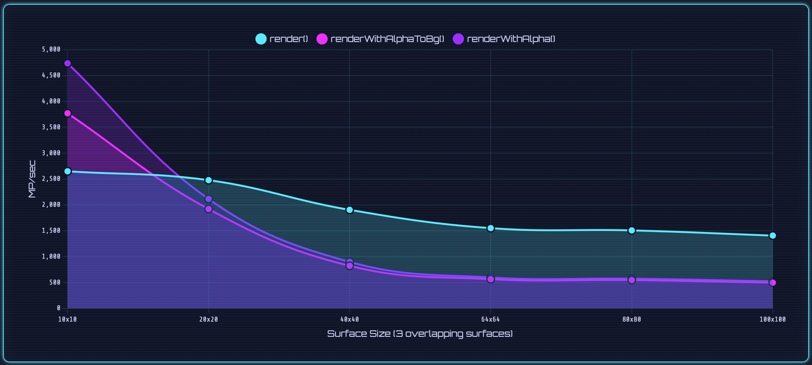
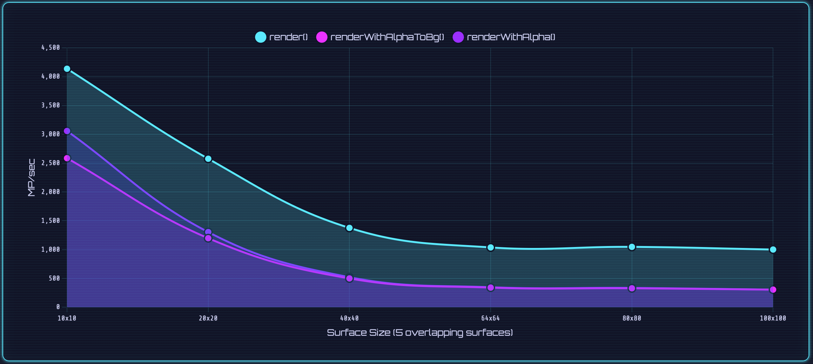
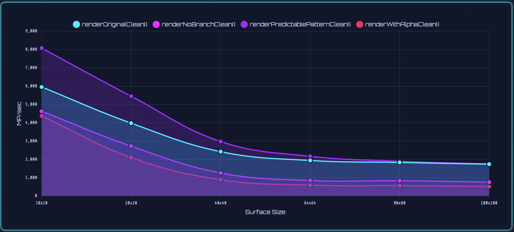
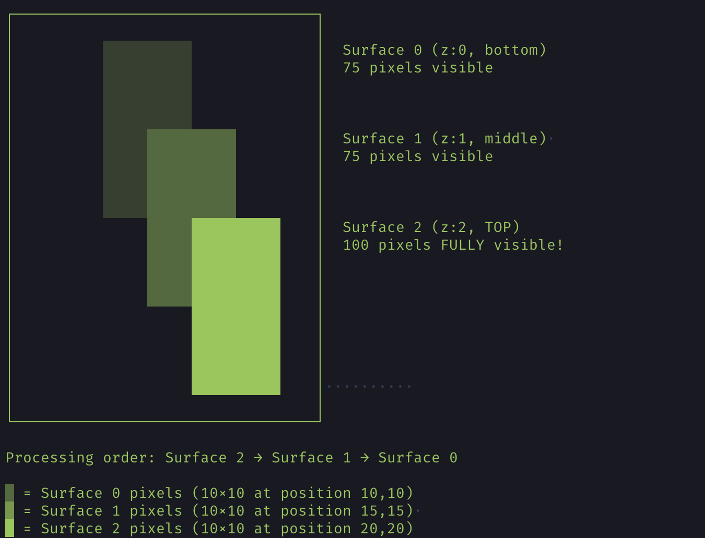
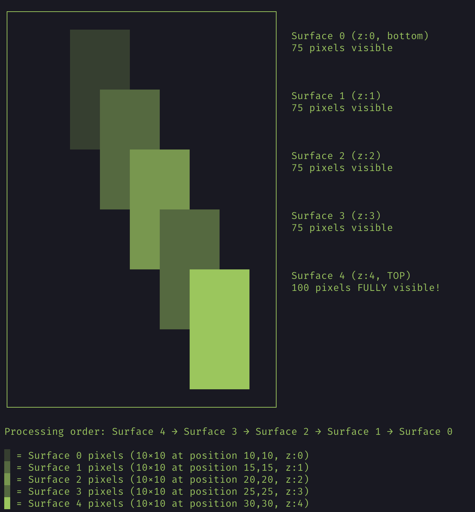

What a terminal renderer taught me about branch prediction, CPU pipelines, and the beauty of being wrong.
M. Schallner, 2025.11.10
Intro
I’ve been building movy, a terminal graphics engine in Zig that turns pixel data into colorful ANSI escape sequences.
Its first renderer — render() — was simple and fast. Binary transparency only: a pixel was either there or it wasn’t. Clean, predictable, no math.
But I wanted to go further. I wanted alpha blending — smooth transparency, soft fades, subtle light effects.
So I added two new compositing paths:
renderWithAlpha() — full alpha compositing with per-pixel blending
renderWithAlphaToBg() — an optimized variant tuned for opaque backgrounds
Once those were in place, the obvious question came up:
How much slower would this make rendering? Would alpha blending prove practical, or simply add a stylish way to waste cycles?
To find out, I built a detailed benchmark suite — same sprites, same overlaps, same frame counts — only the render method changed.
When I ran it the first time, the results looked completely wrong. Everything about the data seemed to defy logic.
What followed would lead me deep into the rabbit hole of branch prediction and CPU pipelines — and remind me that when benchmarks look too wrong to be true, it’s usually the measurement that needs debugging.
Unexpected First-Run Results

Image: Chart comparing the three methods for 10x10 sprites with 3 overlapping surfaces Place image at: arender/output/when-optimized-code-runs-slower/images/chart-comparing-the-three-methods-for-10x10-sprites-with-3-overlapping-surfaces.png
'">
Chart comparing the three methods for 10x10 sprites with 3 overlapping surfaces
On paper, the outcome was obvious.
render() should dominate. It does no math, no blending — just copies pixels.
renderWithAlpha() and renderWithAlphaToBg() both do more work, so they should be 2–3× slower.
That’s what the benchmark was supposed to confirm.
Instead, the data completely contradicted what I expected.
The “fast path” was the slowest.
The “optimized” one lost to the “unoptimized” one.
And the full alpha blender — the one doing the most arithmetic — was the fastest of all.
This outcome didn’t make sense logically. To investigate, I extended the test — more layers, more overlap.
10×10 sprites, 5 overlapping surfaces:

Image: Chart comparing the three methods for 10x10 sprites with 5 overlapping surfaces Place image at: arender/output/when-optimized-code-runs-slower/images/chart-comparing-the-three-methods-for-10x10-sprites-with-5-overlapping-surfaces.png
'">
Chart comparing the three methods for 10x10 sprites with 5 overlapping surfaces
Now render() was not just faster — with 5 surfaces it was in total also 45% faster than it was on 3 surfaces, despite doing more work.
At that point, I was staring at the terminal, wondering if I’d just broken physics.
This benchmark data was undeniable — and completely irrational.
Two things stood out, both equally baffling:
With three surfaces, the supposedly “fast” render() was the slowest of all — even slower than full alpha blending.
Adding more surfaces — five instead of three — somehow made render()faster.
Clearly, something in my “fast path” wasn’t behaving as expected. To understand the cause, I examined the code more closely.
Checking the Code
Here’s the core of render() — the original, binary transparency path (simplified):
for (surfaces) |surface| {
for (each_pixel_in_surface) |_| {
// Bounds checkingif (out_y < 0 or out_y >= height) continue;
if (out_x < 0 or out_x >= width) continue;
// Skip transparent pixelsif (surface.shadow_map[idx_in] == 0) continue;
// Only write if destination is not already occupiedif (out_surface.shadow_map[idx_out] != 1) {
out_surface.color_map[idx_out] = surface.color_map[idx_in];
out_surface.shadow_map[idx_out] = 1;
}
}
}
At first glance, the logic seems straightforward. But there’s a pattern here — three distinct types of conditional checks:
Bounds checking: is the pixel inside the output surface?
Transparency check: is the source pixel visible?
Occupancy check: has something already drawn here?
The alpha-blending version looked similar, but with one crucial difference:
for (surfaces) |surface| {
for (each_pixel_in_surface) |_| {
// Bounds checkingif (out_x < 0 or out_x >= width) continue;
if (out_y < 0 or out_y >= height) continue;
// Skip transparent pixelsif (surface.shadow_map[idx_in] == 0) continue;
// Always blend — no occupancy checkconst blended = blend_colors(
surface.color_map[idx_in],
out_surface.color_map[idx_out]
);
out_surface.color_map[idx_out] = blended;
}
}
The alpha version performs more work per pixel — multiplications and divisions — yet it contains fewer branches. It always blends, without any final “should I draw?” decision.
That difference stood out. It suggested that the extra conditionals might be costing more than the arithmetic itself.
I wasn’t ready to draw conclusions yet, but the hypothesis fit the data too well to ignore.
If that was true, the problem wasn’t arithmetic — it was control flow.
Breaking It Apart
I decided to strip the renderer down and test each factor in isolation.
Test 0: Stripping Away Noise
The goal was to isolate what might be causing the slowdown — especially the occupancy check — by removing anything nonessential. Since my test sprites were always fully inside the output surface, I started by removing the bounds- and transparency checks to keep only the core logic.
So I created a clean variant — same logic, stripped to the core:
for (0..surface.h) |y| {
for (0..surface.w) |x| {
// Only occupancy check remainsif (out_surface.shadow_map[idx_out] != 1) {
out_surface.color_map[idx_out] = surface.color_map[idx_in];
out_surface.shadow_map[idx_out] = 1;
}
}
}
The speedup was massive.
And more importantly — the anomaly vanished.
Three surfaces were now faster than five, exactly as expected. That meant it wasn’t just about the occupancy check we’d isolated.
The reversal was gone, but the reason for this massive improvement wasn’t yet clear.
Test 1: Alpha Without Bounds
Next, I cleaned up the alpha-blending versions the same way — removing bounds checks to see if they’d show the same effect.
Every alpha version scaled normally. No reversal. No anomaly. The pattern held: more surfaces → more time.
That ruled out the blending math itself — it wasn’t the reason alpha blending had outperformed render() earlier. Whatever caused that first reversal between render()and the alpha versions was still hiding somewhere deeper in the control flow.
Test 2: Going Branchless
Having seen improvement from fewer branches, the next step was to quantify the effect of removing them entirely.
So I made a version with no conditionals — it always wrote output, no decisions, no skipping.
The math-heavy version was slower than the conditional one.
Test 3: Perfect Prediction
After seeing that removing branches entirely slowed things down, I wanted to test the opposite extreme — keep the branch, but make it perfectly predictable.
I rewrote the loop to make every branch outcome deterministic — a checkerboard pattern of alternating writes:
Boom. When the branch became perfectly predictable, performance maxed out.
That was the moment everything clicked.
The mystery finally made sense — the anomalies all pointed to branch prediction.

Image: Chart comparing the three methods accross sprite sizes with 3 overlapping surfaces Place image at: arender/output/when-optimized-code-runs-slower/images/chart-comparing-the-three-methods-accross-sprite-sizes-with-3-overlapping-surfaces.png
'">
Chart comparing the three methods accross sprite sizes with 3 overlapping surfaces
But I was not done yet ...
Bonus: The Fastest Branchless Variant
Even after confirming that predictable branches win, I still wanted to know: Is there any truly branchless approach that can compete?
So I added two more experimental variants — both technically branchless, but very different in how they work.
Bitwise Mask Selection
Instead of if, this version builds a bitmask that’s all 1s if the destination pixel is empty, or 0 otherwise. It then merges the colors using pure logical operations:
This keeps an if in the source, but on modern CPUs, the compiler often emits a conditional move (CMOV) instruction. That means the CPU executes both sides and conditionally commits the result — no pipeline stalls, no mispredictions.
None of the fully branchless methods won outright.
The bitwise version performed almost identically to the arithmetic one — proving that the cost wasn’t in math type but in unconditional work.
The conditional-move version did slightly better, but still couldn’t beat the well-predicted branch of renderOriginalClean().
Only the predictable-pattern version consistently outperformed all others — because it let the CPU keep guessing right.
By that point, I had rewritten and tested every variation I could think of — fewer branches, predictable patterns, even branchless math. Yet something still felt off.
So before diving any deeper, I decided to go back to the very beginning — the benchmark itself.
Verifying the Phenomenon
To rule out artifacts, I changed the harness:
Randomized test order across methods and iteration count
Added a short warm-up (discarded iterations before timing)
With those fixes, the dramatic anomalies largely disappeared:
That was the missing piece. The mystery wasn’t hiding in the renderer at all; it was in the benchmark.
The so-called optimization anomaly had simply been a cold-start effect — the first run always began before the cache and branch predictor had warmed up.
Still, one question puzzled me: why had that first run exaggerated the difference so dramatically?
Branch Prediction — the Hidden Performance Killer
Why did that first cold run behave so differently — and why did performance improve so dramatically once the CPU had warmed up?
Modern processors don’t just execute instructions — they predict them.
Every conditional branch (if, while, for, etc.) forces the CPU to guess which path the program will take before it knows the result.
Waiting would stall the pipeline, so the processor speculates and executes ahead.
If the guess is right, everything continues at full speed.
If it’s wrong, the speculative work must be discarded — a branch misprediction.
On modern chips, that penalty is harsh: roughly 15–20 cycles per miss. This can become significant when repeated millions of times.
Branch Interactions and Predictability
In render(), there are three branches, nested tightly inside the hot loop:
bounds checking, transparency checking, and occupancy checking.
Together, they form overlapping, irregular patterns — especially when multiple surfaces overlap in semi-repeating ways.

Image: Test positioning and order of 3 surfaces Place image at: arender/output/when-optimized-code-runs-slower/images/test-positioning-and-order-of-3-surfaces.png
'">
Test positioning and order of 3 surfaces
With three surfaces:
Surface 2: 100 % of pixels visible (nothing drawn yet)
Surface 1: ~75 % visible
Surface 0: ~75 % visible
So roughly one-third of the time the branch saw a “fully empty” region, and two-thirds of the time it saw overlap — a 33 / 66 % rhythm that alternated frequently.

Image: Test positioning and order of 5 surfaces Place image at: arender/output/when-optimized-code-runs-slower/images/test-positioning-and-order-of-5-surfaces.png
'">
Test positioning and order of 5 surfaces
With five surfaces:
Surface 4: 100 % visible
Surfaces 3 → 0: 75 % visible each
Here the predictor encountered a steadier 20 / 80 % pattern, repeating less often.
The overall workload was higher, but the branch outcomes were far more regular — exactly the kind of consistency that keeps a predictor accurate.
When the predictor learns that a condition is “usually true,” it speculates accordingly.
But if the pattern shifts — say, a new surface overlaps differently — it suddenly mispredicts, stalling the pipeline.
That explains the apparent anomaly:
With three surfaces, overlap patterns changed often — confusing the predictor.
With five surfaces, overlaps repeated more regularly — the predictor stabilized.
So render() appeared 45 % faster with more work, simply because its control flow became more predictable once the predictor had enough consistent data.
In other words, the entire anomaly came down to branch prediction dynamics.
Once warmed up, everything behaved exactly as expected — but the first run had exposed just how much a few nested conditionals can confuse a modern CPU before its predictor learns the pattern.
Conclusion
What seemed at first like a simple benchmark that refused to make sense, turned out to be the behavior driven by the CPU — a reminder that “fast” and “slow” are rarely absolutes, but moving targets shaped by prediction, caching, and history.
It also showed how easy it is for measurement itself to mislead.
When data looks wrong, sometimes the real problem is how it’s being observed.
Cold Start:
Function
Has Bounds
Has Occupancy
3 surfaces
5 surfaces
Pattern
render()
✔
✔
1.70 µs
0.93 µs
Anomaly
renderWithAlpha()
✔
–
0.85 µs
1.35 µs
Normal
renderOriginalClean()
–
✔
0.67 µs
0.95 µs
Normal
renderWithAlphaClean()
–
–
0.87 µs
1.24 µs
Normal
Steady State:
Function
Has Bounds
Has Occupancy
3 surfaces
5 surfaces
Pattern
render()
✔
✔
0.69 µs
0.95 µs
Normal
renderWithAlpha()
✔
–
0.92 µs
1.27 µs
Normal
renderOriginalClean()
–
✔
0.72 µs
0.98 µs
Normal
renderWithAlphaClean()
–
–
0.89 µs
1.24 µs
Normal
The real insight wasn’t the anomaly itself, but how sensitive modern CPUs are to pattern predictability — and how easily a benchmark can tell the wrong story.
Key lessons:
The combination of bounds and occupancy checks created destructive interference in the branch predictor.
Predictable work can beat clever skipping.
Simpler control flow can beat smaller instruction counts.
Fixing one hazard can expose another.
Measurement methodology matters — always warm up the cache and branch predictor before comparing results.
I thought I was optimizing - But the branch predictor was smarter than me.
Trust the profiler. Respect the pipeline.And remember — sometimes the dumb path is the smart one.
All benchmark data and charts in this article were generated using the movy performance suite.